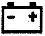
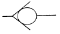
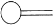
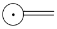
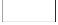
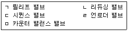
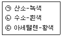

굴삭기운전기능사 (2008-10-05 기출문제)
1. 기관 시동 전에 점검할 사항과 관계가 먼 것은?
- 엔진 오일량
- 엔진 주변 오일 누유 확인
- 엔진 오일의 압력
- 냉각 수량
(정답률: 84%)

2. 엔진오일이 우유 색을 뛰고 있을 때의 원인은?
- 가솔린이 유입되었다.
- 연소가스가 섞여있다.
- 경유가 유입되었다.
- 냉각수가 섞여있다.
(정답률: 78%)
3. 냉각장치에 사용되는 전동 팬에 대한 설명으로 틀린 것은?
- 냉각수 온도에 따라 작동한다.
- 정상온도 이하에는 작동하지 않고 과열일 때 작동한다.
- 엔진이 시동 되면 동시에 회전한다.
- 팬벨트는 필요 없다.
(정답률: 53%)
4. 연료의 세탄가와 가장 밀접한 관련이 있는 것은?
- 열효율
- 폭발압력
- 착화성
- 인화성
(정답률: 53%)
5. 엔진 과열시 일어나는 현상이 아닌 것은?
- 각 작동부분이 열팽창으로 고착될 수 있다.
- 윤활유 점도 저하로 유막이 파괴될 수 있다.
- 금속이 빨리 산화되고 변형되기 쉽다.
- 연료소비율이 줄고 효율이 향상된다.
(정답률: 87%)
6. 디젤기관의 구성품이 아닌 것은?
- 분사펌프
- 공기청정기
- 점화플러그
- 흡기다기관
(정답률: 70%)
7. 디젤엔진의 연소실에는 연료가 어떤 상태로 공급되는가?
- 기화기와 같은 기구를 사용하여 연료를 공급한다.
- 노즐로 연료를 안개와 같이 분사한다.
- 가솔린 엔진과 동일한 연료 공급펌프로 공급한다.
- 액체 상태로 공급한다.
(정답률: 71%)
8. 오일팬(oil pan)에 대한 설명으로 틀린 것은?
- 엔진오일 저장용기다.
- 오일의 온도를 높인다.
- 내부에 격리판이 설치되어 있다.
- 오일 드래인 플러그가 있다.
(정답률: 60%)
9. 디젤기관에 사용하는 에어클리너가 막혔을 때 발생 되는 현상으로 가장 적절한 것은?
- 배기색은 무색이며 출력은 정상이다.
- 배기색은 흰색이며 출력은 증가한다.
- 배기색은 검은색이며 출력은 저하된다.
- 배기색은 흰색이며 출력은 저하된다.
(정답률: 84%)
10. 디젤기관의 노킹 발생 원인과 가장 거리가 먼 것은?
- 착화기간 중 분사량이 많다.
- 노즐의 분무상태가 불량하다.
- 고세탄가 연료를 사용하였다.
- 기관이 과냉 되어있다.
(정답률: 60%)
11. 다음 중 기관정비 작업시 엔진블럭의 찌든 기름때를 깨끗이 세척하고자 할 때 가장 좋은 용해액은?
- 냉각수
- 절삭유
- 솔벤트
- 엔진오일
(정답률: 63%)
12. 엔진 압축압력이 낮을 경우의 원인으로 맞는 것은?
- 압축 링이 절손 또는 과마모되었다.
- 배터리의 출력이 높다.
- 연료계통의 프라이밍 펌프가 손상되었다.
- 연료의 세탄가가 높다.
(정답률: 67%)
13. 운전 중 운전석 계기판에 그림과 같은 등이 갑자기 점등 되었다. 무슨 표시인가?

- 배터리 완전충전 표시등
- 전원차단 경고등
- 전기계통 작동 표시등
- 충전 경고등
(정답률: 75%)
14. MF의 축전지에 대한 설명으로 적합하지 않는 것은?
- 격자의 재질은 납과 칼슘합금이다.
- 무보수용 배터리다.
- 밀봉 촉매 마개를 사용한다.
- 증류수는 매 15일마다 보충한다.
(정답률: 65%)
15. 납산 축전지를 충전할 때 축전지 내에 발생하는 수소가스는 어떤 가스인가
- 중성가스
- 소화가스
- 불연성가사
- 가연성 가스
(정답률: 60%)
16. AC 발전기에서 작동시 전자석이 되는 것은?
- 발전기 팬
- 스테이터
- 계자
- 로터
(정답률: 43%)
17. 기동전동기는 회전되나 엔진 크랭킹이 되지 않는 원인은
- 축전지 방전
- 기동전동기의 전기자 코일 단선
- 플라이휠 링기어의 소손
- 엔진 피스톤 고착
(정답률: 41%)
18. 조명에 관련된 용어의 설명으로 틀린 것은?
- 조도의 단위는 루멘이다.
- 피조면의 밝기는 조도를 나타낸다.
- 광도의 단위는 cd이다.
- 빛의 밝기를 광도라 한다.
(정답률: 50%)
19. 건설기계에 사용되는 저압타이어의 호칭 치수 표시는?
- 타이어의 외경 -타이어의 폭 - 플라이수
- 타이어의 폭 - 타이어의 내경 - 플라이수
- 타이어의 폭 - 림의 지름
- 타이어의 내경 - 타이어의 폭 - 플라이수
(정답률: 62%)
20. 굴삭기의 작업장치 연결부 (작동부) 니플에 주유하는 것은?
- 그리스
- SAE #30
- G.O
- H.O
(정답률: 87%)
21. 도저를 용도별로 분류한 것으로 틀린 것은?
- 불도져
- 틸트도저
- 앵글도져
- 브레이커도져
(정답률: 50%)
22. 지게차를 주차 시켰을 때 포크의 적당한 위치는?
- 지상으로부터 30cm 위치에 둔다.
- 지상으로부터 20cm 위치에 둔다.
- 지면에 내려놓는다.
- 높이 들어 둔다.
(정답률: 78%)
23. 모터그레이더에 사용되고 있는 시어핀은 동력전달 기구 중 어느 곳에 부착되어 있는가?
- 변속기와 파워 콘트롤 장치와의 사이
- 엔진과 파워 콘트롤 장치와의 사이
- 클러치와 변속기와의 사이
- 엔진과 클러치와의 사이
(정답률: 31%)
24. 무한궤도식 건설기계에서 트랙을 쉽게 분리하기 위해 설치한 것은?
- 슈판
- 링크
- 마스터핀
- 부싱
(정답률: 58%)
25. 클러치 부품중에서 세척유로 세척해서는 안 되는 것은?
- 댐퍼 스프링
- 릴리스레버
- 압력판
- 릴리스베어링
(정답률: 47%)
26. 토크 변환기에서 오일의 과다한 압력을 방지하는 밸브는?
- 첵밸브
- 스로틀 밸브
- 압력조정밸브
- 매뉴얼 밸브
(정답률: 66%)
27. 건설기계 소유자는 그 등록지를 다른 시도로 변경하였을 경우 다음 중 어떤 신고를 하는가?
- 등록사항 변경신고를 한다.
- 건설기계소재지 변동신고를 한다.
- 등록이전신고를 한다.
- 등록지의 변경시에는 아무 신고도 하지 않는다.
(정답률: 54%)
28. 건설기계의 구조 또는 장치를 변경하는 사항으로 적합하지 않은 것은?
- 관할 시.도지사에게 구조변경 승인을 받아야 한다.
- 건설기계정비업소에서 구조 또는 장치의 변경 작업을 한다.
- 구조변경검사를 받아야 한다.
- 구조변경검사는 주요구조를 변경 또는 개조 한 날부터 20일 이내에 신청하여야 한다.
(정답률: 34%)
29. 건설기계 조종사 면허를 받지 아니하고 건설기계를 조조한 자에 대한 벌칙은?(관련 규정 개정전 문제로 여기서는 기존 정답인 1번을 누르면 정답 처리됩니다. 자세한 내용은 해설을 참고하세요.)
- 1년 이하의 징역 또는 300 만 원 이하의 벌금
- 100 만 원 이하의 벌금
- 50만 원 이하의 벌금
- 30만 원 이하의 과태료
(정답률: 83%)
30. 도로교통법상 운전자의 준수사항이 아닌 것은?
- 출석지시서를 받은 때 운전하지 않을 의무
- 화물의 적재를 확실히 하여 떨어지는 것을 방지할 의무
- 운행시 고인물을 튀게 하여 다른 사람에게 피해를 주지 않을 의무
- 안전띠를 착용할 의무
(정답률: 84%)
31. 덤프트럭을 신규 등록한 후 최초 정기검사를 받아야 하는 시기는?
- 1년
- 1년 6월
- 2년
- 2년 6월
(정답률: 61%)
32. 승차 또는 적재의 방법과 제한에서 운행상의 안전기준을 넘어서 승차 및 적재가 가능한 것으로 맞는 것은?
- 관할 시 군수의 허가를 받은 때
- 출발지를 관할하는 경찰서장의 허가를 받은 때
- 도착지를 관할하는 경차서장의 허가를 받은 때
- 동.읍 .면장의 허가를 받은 때
(정답률: 68%)
33. 건설기계사업이 아닌 것은?
- 건설기계대여업
- 건설기계수출업
- 건설기계폐기업
- 건설기계정비업
(정답률: 56%)
34. 운전자가 진행방향을 변경하려고 할 때 신호를 하여야 할 시기로 맞는 것은? (단, 고속도로 제외)
- 변경하려고 하는 지점의 30m 전에서
- 특별히 정하여져 있지 않고 운전자 임의대로
- 변경하려고 하는 지점 3m 전에서
- 변경하려고 하는 지점 10m 전에서
(정답률: 71%)
35. 술에 취한 상태의 기준은 혈중 알코올 농도가 최소 몇 퍼센트 이상인 경우인가?(오류 신고가 접수된 문제입니다. 반드시 정답과 해설을 확인하시기 바랍니다.)
- 0.25
- 0.⑤
- 1.25
- 1.50
(정답률: 82%)
36. 자동차에서 팔을 차체의 밖으로 내어 45° 밑으로 펴서 상하로 흔들고 있을 때의 신호는?
- 서행신호
- 정지신호
- 주의신호
- 앞지르기 신호
(정답률: 59%)
37. 건설기계에 사용되는 유압펌프의 종류가 아닌 것은?
- 베인펌프
- 플런져 펌프
- 포막펌프
- 기어펌프
(정답률: 68%)
38. 그림에서 첵밸브를 나타낸 것은?




(정답률: 80%)
39. 유압기기 장치에 사용하는 유압호스로 가장 큰 압력에 견딜 수 있는 것은?
- 고무호스
- 나선 와이어 브레이드
- 와이어레스 고무 브레이드
- 직물 브레이드
(정답률: 56%)
40. 유압모터의 장점으로 틀린 것은?
- 제어가 용이하다.
- 소형장치로 큰 출력을 낼 수 있다.
- 무단 변속이 가능하다.
- 먼지나 이물질에 의한 고장 우려가 있다.
(정답률: 52%)
41. 유압장치에서 피스톤 로드에 있는 먼지 또는 오염물질등이 실린더 내로 혼입되는 것을 방지하는 것은?
- 필터
- 더스트 실
- 밸브
- 실린더 커버
(정답률: 43%)
42. 유압유에 수분이 생성되는 주원인으로 맞는 것은?
- 유압유 누출
- 공기혼입
- 슬러지 형성
- 기름의 열화
(정답률: 66%)
43. 다음 보기에서 분기 회로에 사용되는 밸브만 골라 나열한 것은?

- ㄱ, ㄴ
- ㄴ, ㄷ
- ㄷ, ㄹ
- ㄹ, ㅁ
(정답률: 54%)
44. 유압탱크의 구비 조건과 가장 거리가 먼 것은?
- 적당한 크기의 주유구 및 스트레이너를 설치한다.
- 드레인(배출밸브) 및 유면계를 설치한다.
- 오일에 이물질이 혼입되지 않도록 밀폐 되어야 한다.
- 오일 냉각을 위한 쿨러를 설치한다.
(정답률: 62%)
45. 유압 작동유에 수분이 미치는 영향이 아닌 것은?
- 작동유의 윤활성을 저하시킨다.
- 작동유의 방청성을 저하시킨다.
- 작동유의 내마모성을 향상시킨다.
- 작동유의 산화와 열화를 향상시킨다.
(정답률: 52%)
46. 유압유의 흐름을 한쪽으로만 허용하고 반대방향의 흐름을 제어하는 밸브는?
- 릴리프 밸브
- 체크밸브
- 카운더 밸런스 밸브
- 매뉴얼 밸브
(정답률: 63%)
47. 소화작업시 적합하지 않은 것은?
- 화재가 일어나면 화재 경보를 한다.
- 배선의 부근에 물을 뿌릴 때에는 전기가 통하는지의 여부를 확인 후에 한다.
- 가브 밸브를 잠그고 전기 스위치를 끈다.
- 카바이드 및 유류에는 물을 뿌린다.
(정답률: 88%)
48. 운반하는 물건에 2줄 걸이 로프를 매달 때 로프에 하중이 가장 크게 걸리는 2줄 사이의 각도는?
- 30°
- 45°
- 60°
- 75°
(정답률: 31%)
49. 보기에서 가스용접기에 사용되는 용기의 도색이 옳게 연결된 것을 모두 고른 것은?

- (ㄱ), (ㄴ)
- (ㄴ), (ㄷ)
- (ㄱ), (ㄷ)
- (ㄱ), (ㄴ), (ㄷ)
(정답률: 64%)
50. 안전 보건표지의 종류와 형태에서 그림의 안전표지판이 뜻하는 것은?
- 보안경착용금지
- 보안경착용
- 귀마개 착용
- 인화성물질경고
(정답률: 84%)
51. 작업자의 안전한 행동으로 틀린 것은?
- 운전 전 점검을 시행한다.
- 작업의 속성과 관계없이 빠른 속도로 작업한다.
- 작업반경 내의 변화에 주의하면서 작업한다.
- 작업 종료 후 장비의 전원을 끈다.
(정답률: 90%)
52. 운전 및 정비 작업시의 작업복의 조건으로 틀린 것은?
- 잠바형으로 상의 옷자락을 여밀 수 있는 것
- 작업용구 등을 넣기 위해 호주머니가 많은 것
- 소매를 오무려 붙이도록 되어 있는 것
- 소매를 손목까지 가릴 수 있는 것
(정답률: 76%)
53. 수공구 보관 및 사용 방법으로 틀린 것은?
- 해머 작업시 몸의 자세를 안정되게 한다.
- 담금질 한 것은? 함부로 두들겨서는 안 된다.
- 공구는 적당한 습기가 있는 곳에 보관한다.
- 파손 마모된 것은? 사용하지 않는다.
(정답률: 86%)
54. 스패너 작업시 유의할 사항으로 틀린 것은?
- 스패너의 입이 너트의 치수에 맞는 것을 사용해야 한다.
- 스패너의 자루에 파이프를 이어서 사용해서는 안 된다.
- 스패너와 너트 사이에는 쐐기를 넣고 사용하는 것이 편리하다.
- 너트에 스패너를 깊이 물리도록 하여 조금씩 앞으로 당기는 식으로 풀고 조인다.
(정답률: 80%)
55. 안전장치 선정시의 고려사항에 해당되지 않는 것은?
- 위험부분에는 안전 방호 장치가 설치되어 있을 것
- 강도나 기능 면에서 신뢰도가 클 것
- 작업하기에 불편하지 않는 구조 일 것
- 안전장치 기능제거를 용이하게 할 것
(정답률: 80%)
56. 구급처치 중에서 환자의 상태를 확인하는 사항과 가장 거리가 먼 것은?
- 의식
- 상처
- 출혈
- 격리
(정답률: 88%)
57. 철탑에 설치되어 있는 전력선 밑에서의 굴착작업 전 조치 사항으로 맞는 것은?
- 나무막대를 이용하여 적력선의 높이를 측정한다.
- 작업안전원을 배치하여 안전원의 지시에 따라 작업한다.
- 철탑에 설치되어 있는 전력선 아래 0.5 m 위치에 철 그물을 설치한 후 작업한다.
- 작업장비의 운전석 위에서 나무 막대를 이용 전력선과의 높이를 측정 후 감전에 유의하여 작업한다.
(정답률: 78%)
58. 도시가스 관련법상 도시가스 제조사업소의 부지경계에서 정압기까지 이르는 배관을 무엇이라 하는가?
- 강관
- 외관
- 내관
- 본관
(정답률: 51%)
59. LNG 를 사용하는 도시지역의 가스배관공사시 주의사항으로 틀린 것은?
- LNG 는 공기보다 가볍고 가연성 물질이므로 주의하여야 한다.
- 공사지역의 배관매설 여부를 해당도시가스업자에게 의뢰한다.
- 가스배관 좌우 30 cm 이상은 장비로 굴착하고 30cm 이내는 인력으로 굴착한다.
- 점화원의 휴대를 금지한다.
(정답률: 68%)
60. 고압 충전 전선로에 근접 작업할 때 최소 이격 거리는?
- 0.5m
- 1.2m
- 1.8m
- 2.8m
(정답률: 63%)